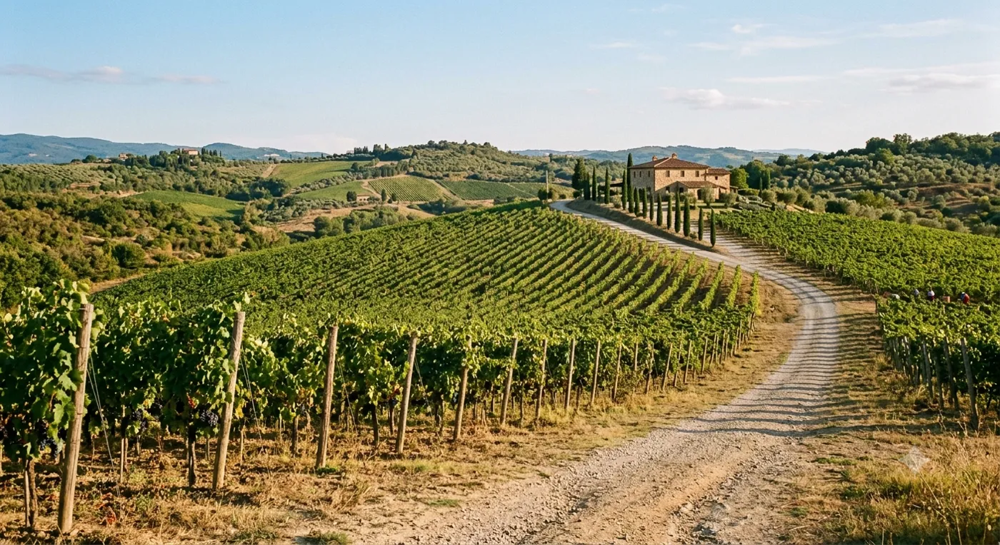

Quello che Nessuno ti Dice sul Vivere nella Campagna Siciliana

La fantasia è estremamente precisa e ce l'hanno tutti uguale. C'è una lunga tavolata fuori. C'è un albero di limoni, abbastanza vicino da poterlo toccare. È il primo pomeriggio inoltrato, la luce ha preso il colore del tè leggero, e qualcuno sta portando fuori qualcosa dentro una teglia pesante. Nella fantasia nessuno è al telefono con un tecnico per via della pompa.
Voglio dire subito che la fantasia non è una bugia. A quella tavolata mi ci sono seduto. La luce fa esattamente così. L'albero di limoni esiste e produce più limoni di quanti una famiglia possa assorbire, al punto che cominci a lasciarli sui muretti degli altri di notte come un delinquente.
Ma è una fantasia montata, e le parti tagliate sono quelle interessanti. Ecco cosa avrei voluto che qualcuno mi dicesse prima che mi trasferissi sulle colline dietro Cefalù.
1. L'acqua non è una cosa che semplicemente accade
In città l'acqua è un fatto. Sta nel muro. Giri una manopola ed è lì, e non ci pensi mai, nello stesso modo in cui non pensi alla struttura portante della tua colonna vertebrale.
In campagna l'acqua è un progetto. C'è un serbatoio. C'è quasi sempre un serbatoio, sul tetto o sulla collina dietro, e il suo livello è un numero che finirai per tenere sempre in testa, come gli altri tengono la percentuale della batteria del telefono. C'è una pompa, e la pompa ha un carattere. C'è un orario in cui la rete — se sei allacciato alla rete — effettivamente eroga, e quell'orario intrattiene un rapporto puramente ornamentale con l'orario che ti avevano detto.
La mia prima estate ho svuotato il serbatoio due volte. La prima per ignoranza. La seconda per arroganza, che è l'ignoranza dopo che te l'hanno già detto una volta. Avevo ospiti. Avevo cucinato. Dodici persone, e ho pronunciato la frase «fatevi pure una doccia», che in quella casa, in quel mese, equivaleva più o meno a dire «andiamo tutti a buttarci in mare».
Si impara. Si impara più in fretta di quanto vorresti. Nel giro di un anno sei il tipo di persona che chiude il rubinetto mentre si lava i denti e ne prova una piccola, immeritata superiorità.
2. La campagna non è silenziosa. È rumorosa in un'altra tonalità
La gente si trasferisce qui per il silenzio e poi scopre che quello che aveva in città era silenzio con sopra parecchio rumore, mentre quello che ha adesso è rumore senza niente sotto che lo assorba.
Cose più rumorose in campagna di quanto chiunque ti dica:
- I cani. Non un cane. Una staffetta. Un cane tre valli più in là attacca qualcosa alle due di notte e la cosa viene passata lungo il crinale come un messaggio in guerra, arrivando a casa tua quaranta secondi dopo e ripartendo verso il mare.
- I galli. Il gallo non canta all'alba. Questa è propaganda. Il gallo canta alle 3:15, alle 4:40, all'alba, e poi, con evidente intento offensivo, verso le dieci del mattino, quando ormai ti sei arreso e sei sceso dal letto.
- Il vento tra le foglie d'olivo, che sembra pioggia e ti farà alzare a chiudere le finestre per, all'incirca, le prime ottanta volte.
- L'Ape. Il tre ruote. La senti arrivare da un chilometro e mezzo, e capisci di chi è, e dal secondo anno capisci dal rumore del motore se ha intenzione di fermarsi.
- Le cicale, a luglio, a un volume che rende sinceramente difficile parlare in terrazza, e che si interrompe così di colpo a una certa temperatura che è il silenzio stesso a svegliarti.
Niente di tutto questo è una lamentela. È solo che «tranquillo» è la parola sbagliata. «Non mediato» ci si avvicina di più. Non c'è niente tra te e quello che succede fuori.
3. Ti daranno delle verdure, e resistere è inutile
Nessuno ti avvisa delle verdure.
Da qualche parte, nella tua prima primavera, un vicino ti lascerà qualcosa sul muretto. Una busta di zucchine. Una cassetta di pomodori che basterebbe per un matrimonio. Delle fave, in quantità tali da far sospettare un equivoco su quante persone vivano a casa tua. Non lo vedrai farlo. Non ci sarà nessun biglietto.
Il tuo istinto — se vieni da qualsiasi posto a nord di Roma più o meno — sarà di ricambiare subito e in misura proporzionale. Non farlo. Restituire una busta di verdure esattamente equivalente la settimana dopo è, in questo sistema, una forma di insulto. Viene letta come chiudere il conto. Vuol dire: siamo pari, e vorrei che il rapporto finisse qui.
La mossa giusta è accettare, ringraziare in modo specifico e prolungato e preferibilmente davanti a un terzo, e poi restare in debito per un periodo indeterminato, durante il quale ti verranno date altre verdure. Il debito non è fatto per essere saldato. Il debito è il rapporto. È un conto corrente che sopravviverà a entrambi e verrà ereditato dai tuoi figli, ai quali daranno anche a loro delle zucchine.
C'è un uomo vicino a noi — lo chiamerò Turi, visto che lassù metà degli uomini di quella generazione si chiama Turi e la cosa fornisce un'ottima copertura — che ha lasciato qualcosa sul nostro muretto, senza dire una parola, all'incirca ogni tre settimane per anni. In tutto questo tempo avremo avuto forse sei conversazioni. Non saprei dirti il suo cognome. Lo accompagnerei a Palermo alle quattro del mattino senza chiedere perché.
4. Agosto non è un mese, è un evento meteorologico
Sai che farà caldo. Lo sanno tutti che farà caldo. Quello che non sai è l'architettura della giornata, che agosto ricostruisce da zero.
Grosso modo dalle undici alle cinque non succede niente. Non «poco»: niente. Le persiane si chiudono. La luce tra le stecche disegna sbarre sul pavimento. Qualsiasi piano che preveda spostamenti in quelle ore ti marchia, in modo permanente, come straniero. La prima estate combatterai contro questa cosa, perché hai da fare e hai viaggiato a lungo e ti sembra assurdo sprecare sei ore di luce. Perderai. Il caldo non sta trattando.
E poi c'è lo scirocco, che merita un paragrafo suo. È il vento che sale dal Nord Africa, e arriva con un cielo del colore del caffè lungo e una polvere rossa finissima che entra in una casa chiusa, su un'auto chiusa, dentro un cassetto. Non è solo caldo, è caldo e sbagliato. Rende tutti irritabili in un modo apertamente riconosciuto: i litigi durante lo scirocco vengono semi-ufficialmente scontati, alla maniera delle cose dette a un funerale. Gli anziani ammutoliscono, i cani interrompono la staffetta, e ti ritrovi in piedi sulla soglia alle quattro del pomeriggio a guardare un cielo marrone, pensando a com'era vivere qui prima di poterlo semplicemente aspettare in casa con un ventilatore.
Dura un giorno, o tre. Poi scende la tramontana dalle Madonie, il cielo torna di scatto a quell'azzurro impossibile, e l'isola intera si comporta come se non fosse successo nulla.
5. L'anno non è fatto di quattro stagioni. È una lista di lavori
Questa è la più profonda, e la più difficile da spiegare a chi è di passaggio.
In città l'anno è un calendario con il meteo attaccato. Quassù l'anno è una sequenza di lavori, i lavori non sono facoltativi e non gliene importa niente di cosa avevi in programma. Se le olive sono pronte, le olive sono pronte. Non il prossimo weekend. Adesso, questa settimana, perché il tempo sta cambiando e il frutto non aspetta.
Grosso modo, e con l'avvertenza che ogni valle ti darà una versione diversa:
- Fine inverno — la potatura delle viti. Mani gelate. Il lavoro più decisivo dell'anno, fatto nelle condizioni peggiori, da gente che sembra farlo quasi distrattamente.
- Primavera — erbe selvatiche, carciofi, fave, e la campagna brevemente e assurdamente verde in un modo a cui chi viene solo d'estate si rifiuta di credere.
- Inizio estate — tutto insieme, e l'inizio della lunga ansia per l'acqua.
- Fine estate e settembre — la vendemmia, che è sfiancante e nervosa e, immancabilmente, le tre settimane migliori dell'anno.
- Ottobre e novembre — le olive. Reti sotto gli alberi, pertiche, mattine fredde e la corsa al frantoio con le cassette di tutti accatastate fuori.
- Pieno inverno — gli agrumi, il camino, e quell'attività molto siciliana che consiste nello stare in un magazzino a guardare il vino dell'anno prima con le braccia conserte.
Abbiamo costruito tutto il nostro calendario di degustazioni attorno a questo, perché si scopre che se segui quello che la campagna sta effettivamente facendo in un dato mese, il vino, il cibo e il motivo per ritrovarsi si dispongono da soli.
Cosa ottieni in cambio
L'ho fatta sembrare una serie di problemi logistici con vista, e per circa diciotto mesi è esattamente questo.
E poi qualcosa si ribalta. Posso dirti la sera precisa in cui è successo a me. Era inizio ottobre, la luce se ne stava andando, ed ero in fondo a un filare con un uomo che aveva appena passato due ore a spiegarmi, a lungo e con un certo calore, perché il modo in cui avevo impilato certe cassette era sbagliato. Sulle cassette non avevamo più niente da dire. Nessuno dei due è rientrato.
La valle sotto di noi ha attraversato quattro colori in dieci minuti. Più giù qualcuno stava bruciando i sarmenti e si sentiva l'odore. E ho capito, con assoluta chiarezza, che non ero in vacanza, che quello non era un panorama che stavo consumando, che sarei stato più o meno in quel punto con più o meno quella luce per il resto della mia vita, e che l'uomo accanto a me — che mi riteneva un idiota in materia di cassette — ci sarebbe stato anche lui.
Lo scambio è questo. Rinunci alla comodità, alla spontaneità, alla pressione dell'acqua e a qualsiasi illusione che il tuo tempo sia tuo. In cambio smetti di essere un visitatore. Diventi di un posto. Non è uno scambio equo, nel senso che è enormemente a tuo favore, e nessuno che l'abbia fatto ha mai, in mia presenza, voluto tornare indietro.
Il lato casa di campagna di quello che facciamo — Ambrosia — esiste più o meno per via di quella sera. Divino in paese è l'introduzione. Le colline sono l'argomento vero.
E se preferisci la versione breve, con un bicchiere in mano e nessun serbatoio da tenere d'occhio, il tavolo lungo è qui.
Comincia in cantina, finisci sulle colline
Divino versa quello che produce la campagna dietro Cefalù. Vieni ad assaggiare la versione breve, poi ti raccontiamo dov'è cresciuta.
Prenota una degustazione